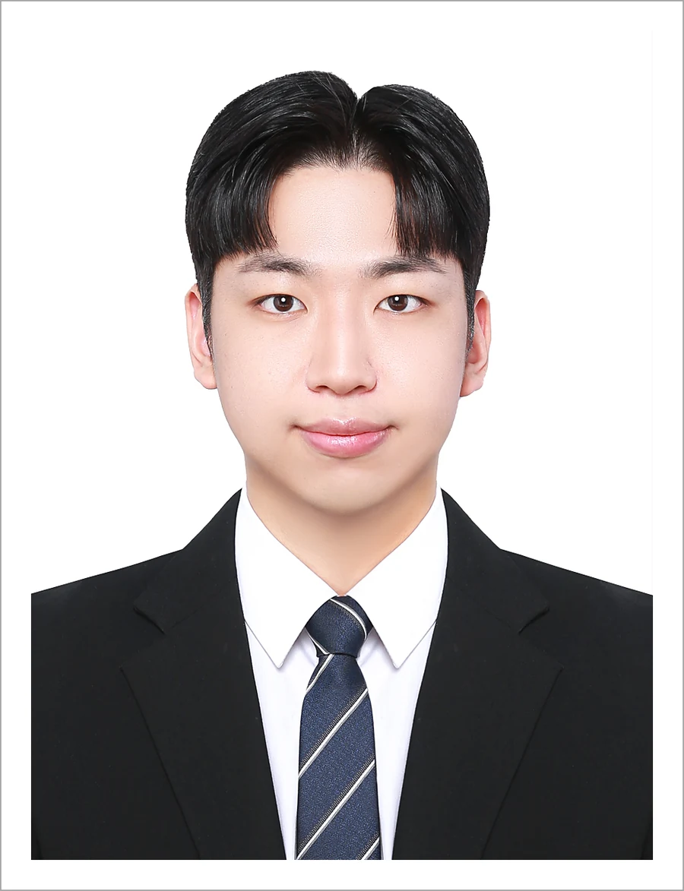
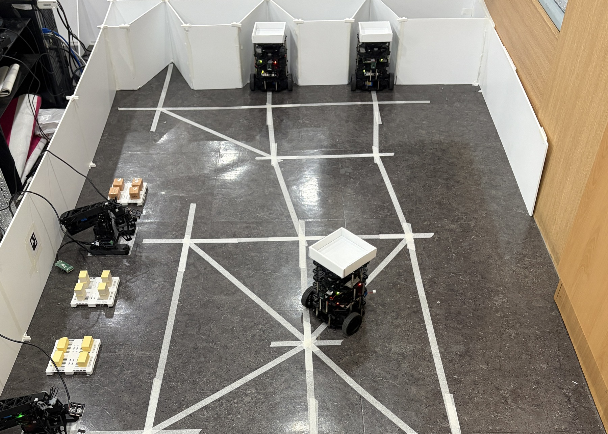
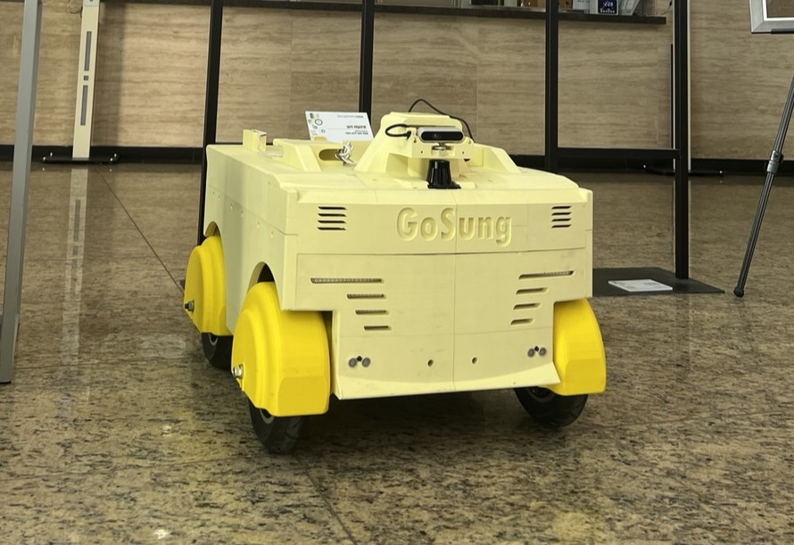
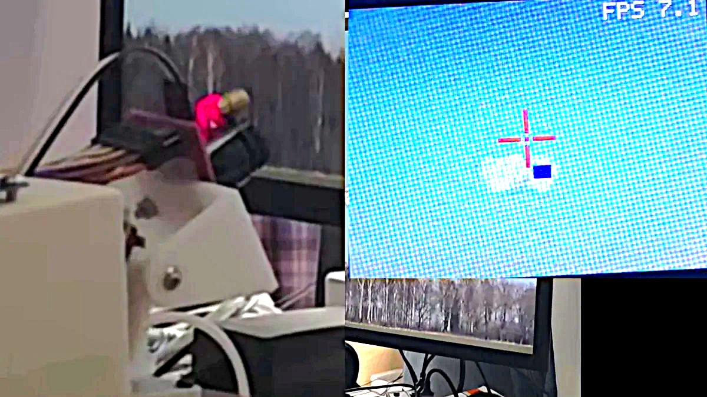
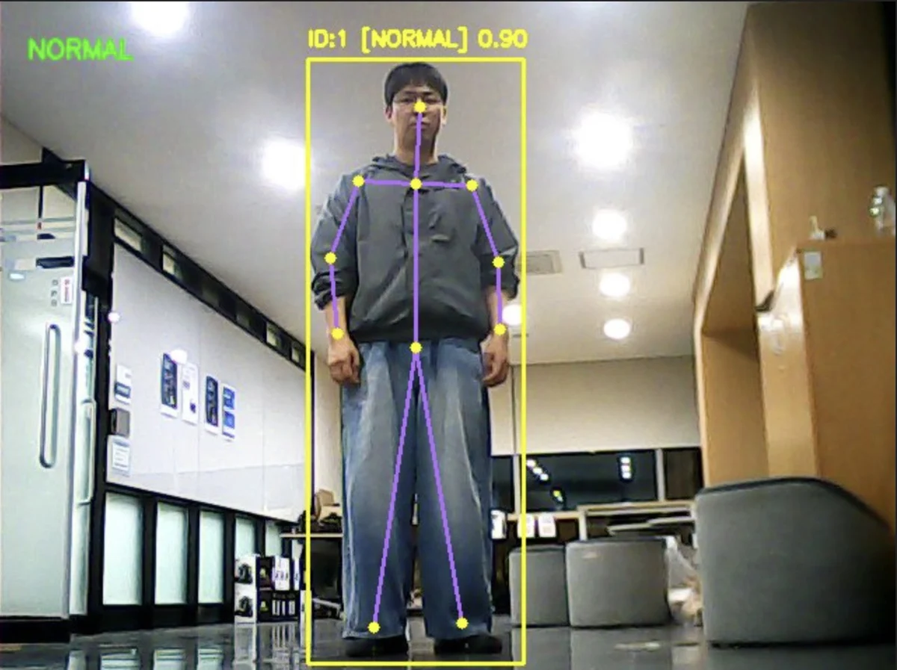
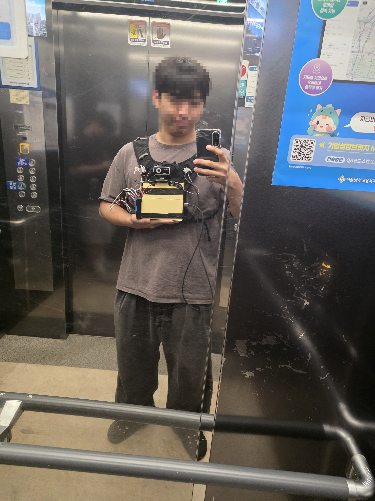
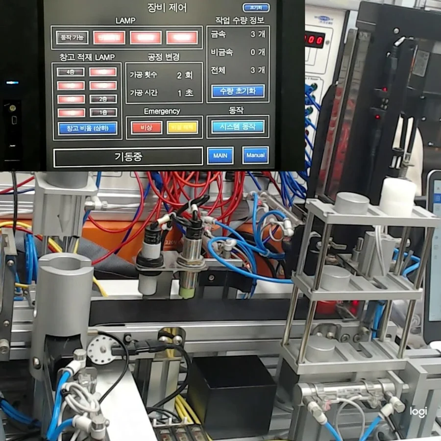

ROS 2 & Navigation
ROS 2 Humble, Jazzy
Nav2, SLAM Toolbox, AMCL
로봇 주행, 지도 생성 및 위치 추정 적용
PORTFOLIO 2026
Lee Myung wook
Robot Software Engineer
임베디드 제어부터 ROS 2 기반 로봇 SW 및 관제 시스템까지 연결해 왔습니다.문제를 직접 확인하고 원인을 좁혀 실제 현장에서 동작하는 로봇을 만들고자 합니다.

01 - SKILLS
주요 언어
C, C++, Python
ROS 2 Humble, Jazzy
Nav2, SLAM Toolbox, AMCL
로봇 주행, 지도 생성 및 위치 추정 적용
STM32F407, STM32H743
FreeRTOS, UART, I2C, DMA, PWM, PID
센서 처리 및 BLDC, Servo 모터 제어
2D LiDAR, Camera
IMU, GPS, OpenCV, Camera Calibration
LiDAR-Camera 데이터 연동 및 이미지 처리
ROS 2, Zenoh, MQTT
Linux, Git, SSH
다중 로봇 통신, 상태 관리 및 작업 흐름 연동
02 - PROJECTS



03 - EMBEDDED AI추적 기능 구현
STM32H743 단일 보드에서 카메라 입력, AI 추론, Pan/Tilt 추적을 구현한 온디바이스 AI 시스템
MY ROLE카메라 및 AI 추론 연동, 추적 안정화, FSM 구현
프로젝트 상세
04 - ROBOT SYSTEM INTEGRATION대상 추적 시연
Pose 기반 상황 판단 및 대상 재식별, 추적 기능을 연동한 순찰 로봇
MY ROLEPose 기반 상황 판단, 대상 재식별 및 추적 제어, 모바일 연동 구현
프로젝트 상세
05 - SYSTEM INTEGRATION기능 연동 검증
TMAP 경로 안내 및 IMU 방향 정보를 진동으로 전달하는 보행 보조 시스템
MY ROLEIMU 방향 정보, 진동 피드백, Android 앱 기능 통합
프로젝트 상세
06 - SEQUENCE CONTROL교육 프로젝트
Mitsubishi PLC 및 HMI로 층별 적재, 비우기, 수동 운전을 구현한 교육 프로젝트
MY ROLEPLC 시퀀스, HMI 제어 공동 구현
프로젝트 상세03 - ABOUT
코드가 센서와 모터를 거쳐 실제 움직임으로 이어지는 과정이 좋아 로봇을 선택했습니다. 임베디드 제어부터 로봇 소프트웨어와 관제 시스템까지 직접 연결하며 경험을 넓혀 왔습니다.
예상대로 움직이지 않을 때 로그와 재현 조건으로 원인을 좁히고, 실제 장치에서 다시 확인하는 과정에서 가장 많이 성장했습니다. 센서와 모터, 소프트웨어가 하나의 동작으로 이어지는 로봇 시스템을 개발하고 싶습니다.
EDUCATION - DIRECTION
AI 융합 로봇 SW 개발자 과정 3기
정보통신공학 학사, 임베디드 제어 및 로봇 프로젝트 경험
하드웨어와 소프트웨어를 함께 이해하고, 실제 로봇의 움직임을 만드는 엔지니어가 되고 싶습니다.
04 - CONTACT
프로젝트 코드 및 상세 구현은 GitHub에서 확인할 수 있습니다.